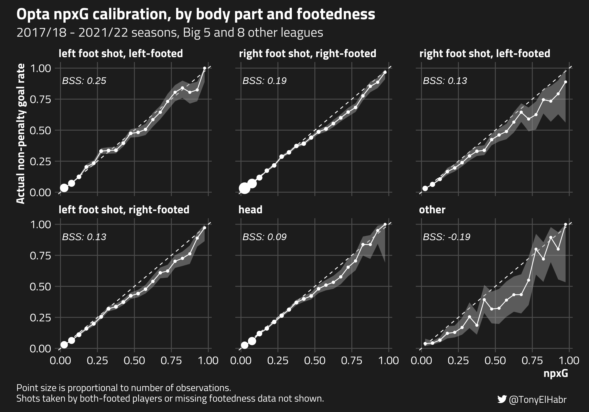

Introduction
Recently, I pointed out what seemed to be a bug with the expected goals (xG) data shown on FBref. In particular, the difference between non-penalty goals (npG) and non-penalty xG (npxG)1 seemed to be an outlier for the 2021/22 season across the Big 5 leagues.
“aLl xG mOdeLs ArE thE sAme”
my brother in christ wut is this then pic.twitter.com/7tjp1VFkoc— Tony (@TonyElHabr) January 14, 2023
As it turns out FBref and their data provider, Opta, agreed! On Feb. 8, 2023, they posted an update indicating that they adjusted 2021/22 xG such that the difference between npG and npxG is much more in line with other seasons.
The FBref/Opta update gave me two ideas:
Compare pre- and post-update xG to identify where/how adjustments were applied.2
Quantify the calibration of their xG model.
1. Pre- and post-update xG comparison
First, let’s take a wholistic look at all of the shots for the 2021/22 seasons played in Big 5 leagues.3
 Of the 44,986 shots in the data set,
30,326 (67.2%) had changes to their xG values.4 Of
those that changed, 23, 584 (78.0%) were reduced, i.e. the pre-update xG
value was higher. The average change was pretty minimal, just about
~0.01 xG.
Of the 44,986 shots in the data set,
30,326 (67.2%) had changes to their xG values.4 Of
those that changed, 23, 584 (78.0%) were reduced, i.e. the pre-update xG
value was higher. The average change was pretty minimal, just about
~0.01 xG.
glimpse(discretized_updated_np_shots)
#> Rows: 44,986
#> Columns: 16
#> $ league <fct> ENG, ENG, ENG, ENG, ENG, ENG, ENG, ENG, ENG, ENG, E…
#> $ date <date> 2021-08-13, 2021-08-13, 2021-08-13, 2021-08-13, 20…
#> $ half <dbl> 1, 1, 1, 1, 1, 2, 2, 2, 1, 1, 1, 1, 1, 1, 1, 2, 2, …
#> $ minute <chr> "11", "12", "22", "28", "30", "66", "73", "80", "2"…
#> $ team <chr> "Brentford", "Brentford", "Brentford", "Brentford",…
#> $ player <chr> "Frank Onyeka", "Bryan Mbeumo", "Sergi Canós", "Ser…
#> $ new_xg <dbl> 0.08, 0.09, 0.02, 0.06, 0.26, 0.06, 0.40, 0.28, 0.0…
#> $ old_xg <dbl> 0.09, 0.14, 0.04, 0.07, 0.31, 0.13, 0.58, 0.27, 0.0…
#> $ is_goal <fct> no, no, yes, no, no, no, yes, no, no, no, no, no, n…
#> $ distance <fct> "(8,10]", "(12,14]", "(16,18]", "(20,25]", "(12,14]…
#> $ sca1 <fct> pass_live, pass_live, pass_live, pass_live, take_on…
#> $ body_part <fct> Head, Right Foot, Right Foot, Right Foot, Right Foo…
#> $ is_from_deflection <fct> no, no, no, no, no, no, no, no, no, no, no, no, no,…
#> $ is_from_volley <fct> no, no, no, no, no, no, no, no, no, yes, no, no, no…
#> $ is_free_kick <fct> no, no, no, no, no, no, no, no, no, no, no, no, no,…
#> $ is_primary_foot <fct> missing, no, yes, yes, no, yes, missing, missing, y…
discretized_updated_np_shots |>
filter(!is_penalty) |>
mutate(xgd = old_xg - new_xg) |>
pull(xgd) |>
mean()
#> [1] 0.0095014
To get more insight into how/why xG changed, we can look at changes
to xG values grouped by various features that FBref
publishes alongside each shot’s xG, including distance
(yards), sca1 (direct shot-creating
action), body_part, is_from_deflection,
is_from_volley, is_free_kick, and
is_primary_foot.56
The table below shows that the reductions in npxG occurred most
frequently for longer distances, suggesting that the
pre-update xG model was over-predicting xG for longer shots.
Interestingly, xG for shots when interceptions led directly to the shot
(sca1), and xG for shots with
body_part = "other" (non-foot, non-header) were also
frequently reduced, in the cases where xG was changed.
| Feature | Group | # of non-penalty shots | # of shots with changed npxG | # of shots with lower post-update npxG of those that changed |
|---|---|---|---|---|
distance |
(25,30] |
6,061 | 3,659 (60.4%) | 3,437 (93.9%) |
distance |
(20,25] |
6,760 | 4,463 (66.0%) | 4,088 (91.6%) |
sca1 |
"interception" |
149 | 96 (64.4%) | 87 (90.6%) |
distance |
(18,20] |
1,889 | 1,232 (65.2%) | 1,088 (88.3%) |
distance |
(30,35] |
2,725 | 1,267 (46.5%) | 1,117 (88.2%) |
body_part |
"Other" |
191 | 153 (80.1%) | 130 (85.0%) |
On the other end of the spectrum, reductions in npxG occurred least
frequently for shorter distance buckets
((0,2], (2,4], (4,6],
(6,8)). Reductions still occurred a majority of the time
when there was a change—note that each has >50% for the
last column—for all but the shortest distance group,
(0,2].
| Feature | Group | # of non-penalty shots | # of shots with changed npxG | # of shots with lower post-update npxG of those that changed |
|---|---|---|---|---|
distance |
(0,2] |
173 | 130 (75.1%) | 51 (39.2%) |
distance |
(2,4] |
1,087 | 826 (76.0%) | 428 (51.8%) |
distance |
(4,6] |
2,003 | 1,479 (73.8%) | 831 (56.2%) |
distance |
(35,Inf] |
539 | 313 (58.1%) | 177 (56.5%) |
distance |
(6,8] |
2,557 | 1,882 (73.6%) | 1,183 (62.9%) |
is_free_kick |
"yes" |
1,576 | 882 (56.0%) | 557 (63.2%) |
2. xG Model Calibration
I’ve
touched on model calibration before, when discussing xG-implied
match outcome probabilities. There, I wrote my own code to create a calibration
plot. Since then, the {tidymodels} team
has added calibration
plot functionality to the {probably}
package. Let’s try it out.
Here, we’ll use a big sample of data—all 2017/18 - 2021/22 non-penalty shots for the Big 5 leagues and several other first and second tier leagues.7
np_shots |> count(league, name = 'n_shots')
#> # A tibble: 13 × 2
#> league n_shots
#> <chr> <int>
#> 1 BRA_1st_M 39380
#> 2 ENG_1st_F 11366
#> 3 ENG_1st_M 46766
#> 4 ENG_2nd_M 52701
#> 5 ESP_1st_M 43398
#> 6 FRA_1st_M 43021
#> 7 GER_1st_M 39148
#> 8 ITA_1st_M 49903
#> 9 MEX_1st_M 32650
#> 10 NED_1st_M 29803
#> 11 POR_1st_M 27366
#> 12 USA_1st_F 9887
#> 13 USA_1st_M 31047
Calibration plot
We can use probably::cal_plot_breaks() to visually
assess whether the observed rate of non-penalty goals (y-axis) is close
to the predicted probably of goals (npxG, x-axis).8 If
the xG model’s predictions are “well calibrated”, the calibration points
will align with the “ideal” line having slope 1 and intercept 0. Points
at which the curve is below the diagonal line indicate where the model
is more likelty to overpredict; and, likewise, points where the curve is
above the diagonal line indicate where the model is underpredicting.
library(probably) ## 0.1.0.9007
overall_calibration <- cal_plot_breaks(
np_shots,
truth = is_goal,
estimate = xg,
num_breaks = 20,
conf_level = 0.9,
event_level = 'second'
)
We can see that the model is pretty well calibrated on the lower end
of the spectrum, when xG < 0.25. This makes up a larger majority of
the shots (~90%). However, the model is not as well calibrated for
higher xG values, tending to overpredict. For example, at the
calibration point where npxG is 0.675, the actual goal rate
is 0.6.
Brier Skill Score (BSS)
One thing that is not provided in the {tidymodels} realm
(specifically, the {yardstick} package) is a function to
compute Brier
score. Nonetheless, we can define a Brier score function ourselves
by closely following the mean
squared error custom metric example provided by the
{tidymodels} team.9
library(yardstick)
library(rlang)
brier_score <- function(data, ...) {
UseMethod('brier_score')
}
brier_score <- yardstick::new_prob_metric(brier_score, direction = 'minimize')
brier_score_vec <- function(truth, estimate, na_rm = TRUE, event_level, ...) {
brier_score_impl <- function(truth, estimate, event_level, ...) {
truth <- 1 - (as.numeric(truth) - 1)
if (event_level == 'second') {
truth <- 1 - truth
}
mean((truth - estimate)^2)
}
## Recycle the estimate value if it's scalar-ish.
if (length(estimate) == 1) {
estimate <- rep(estimate, length(truth))
}
yardstick::metric_vec_template(
metric_impl = brier_score_impl,
truth = truth,
estimate = estimate,
na_rm = na_rm,
cls = c('factor', 'numeric'),
estimator = 'binary',
event_level = event_level,
...
)
}
brier_score.data.frame <- function(data, truth, estimate, na_rm = TRUE, event_level = 'first', ...) {
yardstick::metric_summarizer(
metric_nm = 'brier_score',
metric_fn = brier_score_vec,
data = data,
truth = !!rlang::enquo(truth),
estimate = !!rlang::enquo(estimate),
na_rm = na_rm,
event_level = event_level,
...
)
}
Let’s compute the Brier scores for (1) the overall goal rate (i.e. shots per goal) and (2) xG. We should expect the Brier score for the latter to be closer to 0 (perfect model), since xG should be a better predictor of goals than the naive goal rate.
np_goal_rate <- np_shots |>
count(is_goal) |>
mutate(prop = n / sum(n)) |>
filter(is_goal == 'yes') |>
pull(prop)
np_goal_rate
#> 0.0960288
np_goal_rate_brier_score <- np_shots |>
brier_score(
truth = is_goal,
estimate = !!np_goal_rate,
event_level = 'second'
) |>
pull(.estimate)
np_goal_rate_brier_score
#> [1] 0.08680727
npxg_brier_score <- np_shots |>
brier_score(
truth = is_goal,
estimate = xg,
event_level = 'second'
) |>
pull(.estimate)
npxg_brier_score
#> [1] 0.07150071
Now we can go on to compute Brier skill score (BSS) using an appropriate reference Brier score.10 In this context, the average goal rate seems to be a good choice for a baseline. In contrast to the Brier score, a higher BSS is ideal. (A perfect model would have a BSS of 1.)
npxg_brier_score <- np_shots |>
brier_score(
truth = is_goal,
estimate = xg,
event_level = 'second'
) |>
pull(.estimate)
1 - (npxg_brier_score / np_goal_rate_brier_score)
#> [1] 0.176328
A BSS of ~0.18 is not bad! This is better than FiveThirtyEight’s BSS for predicting the results for men’s World Cup matches (~0.12 at time of writing) and right around their BSS for predicting WNBA playoff game outcomes (~0.18).
Grouped Calibration and BSS
Now let’s take a look at model calibration under specific criteria.
Is the model worse for shots that follow a dribble
(take_on) shot-creating action? After a
live_ball pass? etc.

A couple of observations and thoughts:
xG of shots following another shot are over-predicted so much that it causes the BSS to be negative. This means that the model is actually doing worse in its xG assignment than simply predicting naive goal rate for shots after another shot!
A relatively “jagged” calibration plot may not correspond with a worse (lower) BSS score; and visa versa, a relatively “smooth” calibration plot may not correspond with a better (higher) BSS.
- Note that the
fouledcalibration looks jagged for higher predicted xG, but the fact goals are only scored on about 5% shots immediately following a foul means that inprecise probabilities are not “penalized” quite as much. On the other hand, while thepass_livecalibration looks relatively smooth, the fact that 10% of shots following live ball passes (2x the frequency for shots following fouls) means that it is more penalized for imprecision than an otherwise equivalent post-fouledshot. In fact, this is one of the shortcomings of BSS—it does not do a great job with evaluation of relatively infrequent events.
- Note that the
Next, let’s take a look at calibration off shots coming after deflections (of other shots).

- The model doesn’t seem to be very well calibrated for shots
following deflections! Like shots following other shots in the
shot-creating action calibration plot, the BSS for shots after
deflections is negative. And, perhaps more interestingly, the model
seems to underpredict post-deflection shots, which is the opposite of
it’s general tendency to overpredict. (See the wholistic calibration
plot from before.)
- I’d suspect that there’s lots of confounders that might explain the lack of calibration after deflections. For one, it could be the case that there are often zero defenders between the shot-taker and keeper for shots following a deflection. As far as I know, the Opta model doesn’t have an explicit feature for this.
- It might also be the case that Opta’s “big chance” indicator—which is not published on FBref but which I suspect take on a value of “yes”/1/true for many post-deflection shots—may have some flaws.
Moving on, let’s look at calibration of the xG model by groups of leagues, splitting out by tier and gender.

- StatsBomb has talked about how a “gender-aware” model outperformed a baseline model, so one might expect the calibration of Opta’s singular model to be weaker for the women’s game. It turns out that while, yes, the calibration seems to be a bit worse for shots in the women’s leagues, the overall difference in model performance for men’s and women’s leagues seems to be trivial for the sample here.
- Interestingly, the calibration of the model for non-Big 5 leagues and the English men’s Championship league are slightly better according to BSS, although the differences (both visually, with the calibration curve, and with BSS) are very minimal.
Finally, let’s look at how footedness may play a role in model calibration. As far as I know, whether or not a footed shot is take by a player’s primary foot is not an input into the Opta model, so it may be particularly interesting to look at.

- Despite my suspicion that xG for shots taken by a player’s weaker
foot (
right foot shot, left-footedandleft foot shot, right-footed) might be severely overpredicted, this doesn’t really seem to be the case. Yes, the model tends to overpredict for these kinds of shots, but the degree to which overprediction occurs doesn’t seem out of line with the whole model.- I can think of least two types of “selection bias” at play here that
might explain why the calibration isn’t as bad as I might have guessed
for weak-footed shots:
- Players are more likely to take weak-footed shots when they’re closer to the goal, where shots are likely to have higher xG, but also where shots are also more likely to go in.
- Players are less likely to take more difficult shots with their weak foot, so they’re not taking as many shots that are unlikely to go in, holding all else equal.
- I can think of least two types of “selection bias” at play here that
might explain why the calibration isn’t as bad as I might have guessed
for weak-footed shots:
- Of the non-footed shots, it’s interesting to see that the BSS for
headers and shots from
otherbody parts are not particularly well calibrated. In fact, the latter has a negative BSS, indicating that we’d better off with a model that predicted the average goal rate for such shots.
Conclusion
We’ve explored the wonderful world of model calibration, making friends with BSS and calibration curves in our investigation of a public xG model. Are BSS and calibration curves the be-all and end-all when it comes to model evaluation? Of course not! But they’re useful tools that may or may not be appropriate for your use case.
When it comes to the Opta xG model specifically, am I implying that the model is bad? Of course not! Yes, faceted calibration curves and feature-specific BSS can make a model look bad, but we must keep in mind that there are trade-offs to be made with modeling. Fine-tuning a model to be more well calibrated under certain conditions, e.g. shots after deflections, may make other parts of the model worse! It’s all about trade-offs.
It’s typically better to analyze expected goals after removing penalties since penalties can distort quantities, adding “noise” to an analysis.↩︎
FBref/Opta didn’t specify how they changed their xG model. Given how I observed very only trivial differences in the shot-level xG for prior seasons, it’s possible that they didn’t even change their model! There could have been some data issue specific to the 2021/22 season, that, when addressed, resulted in more plausible xG.↩︎
Observe that, for a large majority of shots, where xG is in the (0, 0.05] range, xG either did not change at all or only trivially changed. (See the blur of white points on the left-hand side of the plot.)↩︎
Several of these are not provided directly from the raw FBref tables. For example,
is_from_deflectionis derived from theNotesfield in the FBref shot table.is_primary_footis derived from collecting player footedness data and checking for a match withbody_part.↩︎Note that I use the term “feature” here, although this set of fields does not quite match the actual inputs to the Opta xG model. While things like
distanceandbody_partcertainly are inputs to the model, we don’t have angle of the shot to the goal, andis_primary_foot—a field that I’ve added the feature set myself—isn’t one of the model inputs, as far as I’m aware.↩︎Several leagues don’t have data available for all such seasons, which is reflected in the row counts by group.↩︎
I’ve written my own code to plot the calibration, but I imagine most users will be satisfied with the plot that
{probably}will generate for you.↩︎Brier score for a binary classification task is equivalent to mean squared error.↩︎
Personally, I like to use BSS over other classification metrics like ROC AUC or Brier score alone. BSS is arguably the most interpretable probabilistic classification measure. Also, I like that it forces one to choose a reference with which to compare, which is a good principle in general, I think.↩︎